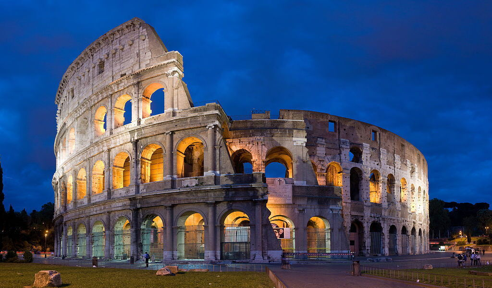
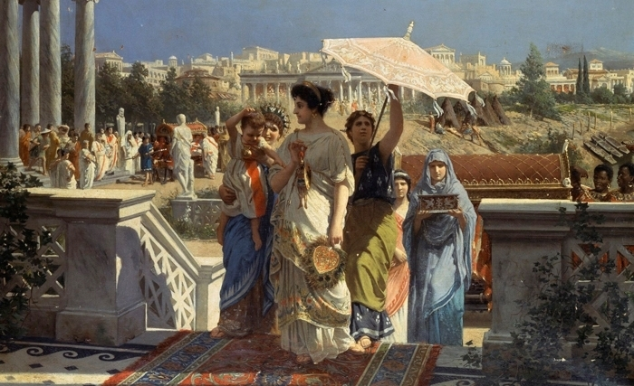
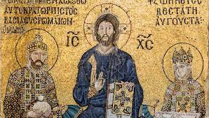
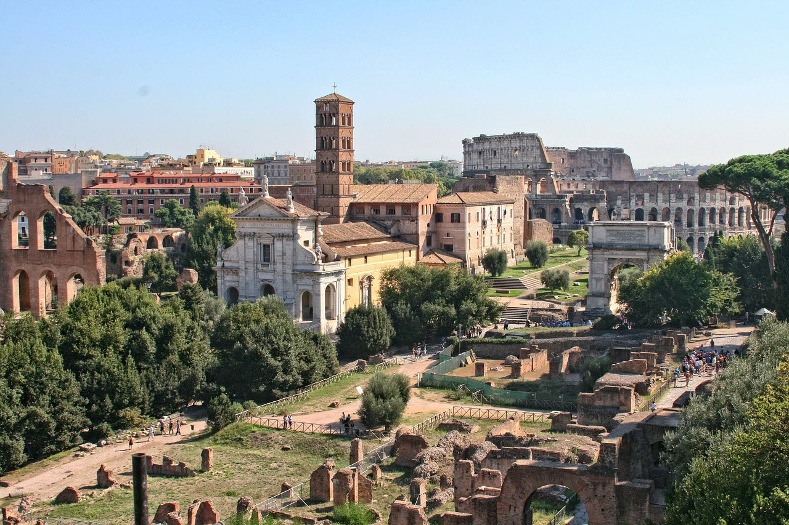

Tunisie : Mémoire des Civilisations
L'Afrique Romaine
Après la destruction de Carthage en 146 avant J.-C., la Tunisie devient une province romaine appelée "Africa". Les Romains établissent de nouvelles villes, développent l'agriculture et exploitent les ressources naturelles de la région.
Prospérité et Romanisation
Sous la domination romaine, la Tunisie connaît une période de prospérité économique et culturelle. L'introduction du latin, la construction de routes, d'aqueducs et de monuments imposants, tels que l'amphithéâtre d'El Jem, témoignent de l'influence romaine.
L'Empire Byzantin
Après la chute de l'Empire romain d'Occident, la Tunisie passe sous le contrôle de l'Empire byzantin au VIe siècle.
Vestiges Romains et Byzantins
De nombreux vestiges romains et byzantins sont encore visibles en Tunisie, notamment à Dougga, El Jem, et Bulla Regia. Ces sites archéologiques témoignent de la richesse et de la diversité du patrimoine historique de la Tunisie.
L'amphithéâtre d'El Jem
L'amphithéâtre d'El Jem, un monument imposant et remarquablement bien conservé, est un témoignage de la grandeur de l'Empire romain en Tunisie.